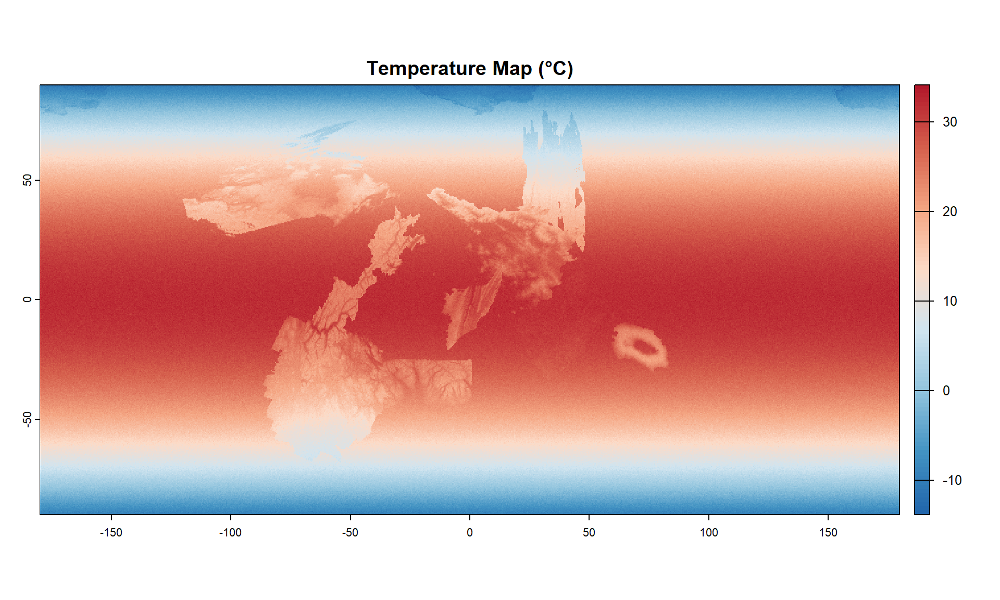
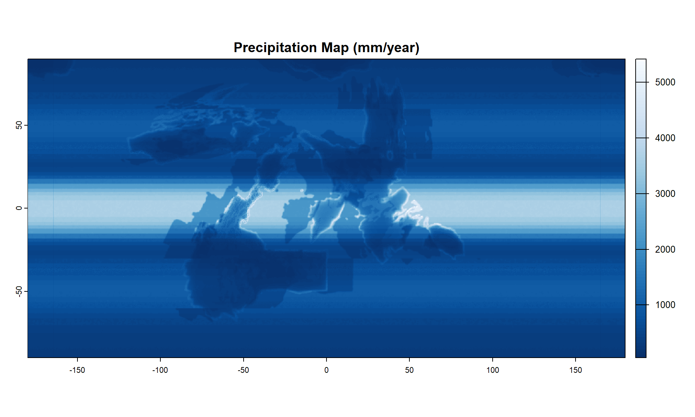
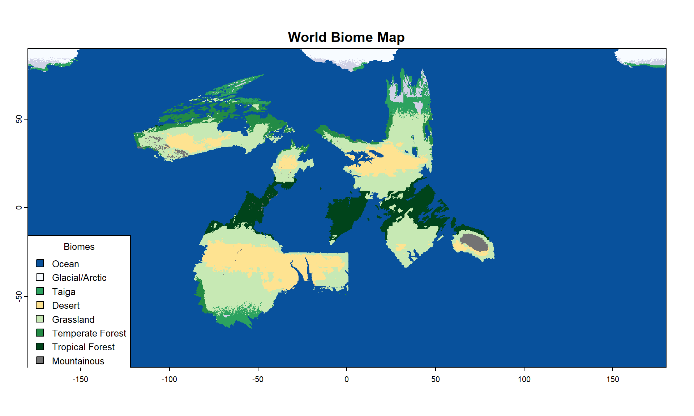

5 Climate and Biomes
5.1 The Climate of EARTH
RA was not a climatologist but had a basic understanding of how heat, water, latitude, and altitude combined to create different biomes on the planet’s surface. From frozen polar wastes to lush tropical rainforests, the planet supports a remarkable variety of ecosystems.
5.2 Temperature: The Foundation of Climate
Temperature is the fundamental driver of climate patterns. On EARTH, temperature varies systematically with latitude—warmest at the equator, coldest at the poles—and decreases with elevation due to atmospheric thinning.

5.3 Precipitation
Precipitation patterns are more complex than temperature, influenced by latitude, ocean proximity, prevailing winds, topography, and temperature itself.


This combination of variables results in four major climate-scale zones:
- Equatorial Belt (2500+ mm): High rainfall driven by rising air masses
- Subtropical Deserts (<250 mm): Descending air creates arid conditions
- Temperate Zones (800+ mm): Moderate rainfall from mid-latitude storms
- Polar Regions (300 mm): Low precipitation due to cold, dry air
5.4 The Biomes
The interaction of temperature and precipitation creates eight distinct biome types across EARTH’s surface. Each biome represents a unique combination of climatic conditions that support specific plant and animal communities.

5.5 Climate Statistics
| Biome | % of Surface |
|---|---|
| Ocean | 84.3 |
| Glacial/Arctic | 1.1 |
| Taiga | 1.1 |
| Desert | 3.0 |
| Grassland | 6.2 |
| Temperate Forest | 1.2 |
| Tropical Forest | 2.1 |
| Mountainous | 0.3 |
| NA | 0.5 |
Physical geography is not my strong suit and I ended up relying heavily on AI to select plausible parameters for each stage of this climate framework. I am not entirely happy with the precipitation model which seems far more deterministic than I would like, but efforts to add noise were not sufficient to overcome the starting premises for rainfall without disrupting the broader patterns. It is my hope that the efforts at downscaling in a future chapter will add sufficient disruption to the patterns shown here to produce the variation and ‘naturalness’ I am aiming for. In the meantime, I leave the main components of my modeling strategy here for people with more climate knowledge than I to critique.
The temperature model incorporates three key factors:
- Base Temperature by Latitude: Using a quadratic relationship that gives approximately 32°C at the equator and -10°C at the poles
- Elevation Adjustment: Applying a variable lapse rate that adjusts for local conditions
- Regional Variation: Adding local variations (±3°C) to create natural-looking temperature patches
The precipitation model incorporates six major components:
- Latitude Bands: ITCZ (Intertropical Convergence Zone) at the equator, subtropical dry zones, temperate wet zones, and polar dry zones
- Ocean Currents: Warm currents increase coastal precipitation, cold currents decrease it
- Moisture Availability: Distance from oceans and large lakes affects available moisture
- Orographic Effects: Mountains create rain shadows on leeward sides and enhanced precipitation on windward slopes
- Temperature-Moisture Relationship: Warmer air holds more moisture
- Elevation Effects: Very high elevations receive less precipitation due to thin air
Biome is determined by temperature and precipitation:
Ocean Glacial/Arctic - Areas occur where temperatures consistently fall below -5°C. Taiga - Found in regions with temperatures between -5°C and 5°C and moderate precipitation (>400mm). Temperate Forest - Requires temperatures between 5°C and 20°C with precipitation exceeding 750mm annually. Tropical Forest - These areas receive the highest rainfall and maintain warm temperatures year-round (>20°C, >2000mm precipitation). Grassland - Regions with moderate rainfall (250-750mm). Grasses, rather than trees, form the primary vegetation due to seasonal drought and temperatures between 5°C and 25°C. Desert - Arid landscapes with minimal precipitation (<250mm). Extreme temperature swings between day and night characterize these harsh environments found in warm regions (>5°C). Mountainous - High elevation areas (>2000m). Alpine meadows give way to bare rock at the highest peaks. These override other classifications due to the extreme conditions created by elevation.
Note that I attempted to generate biomes at rates proximate to their actual distribution on Earth. This required adding Canada to the global map to make up for a huge shortfall in deciduous forest.